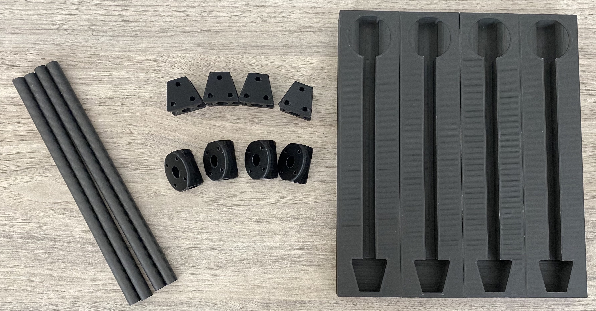
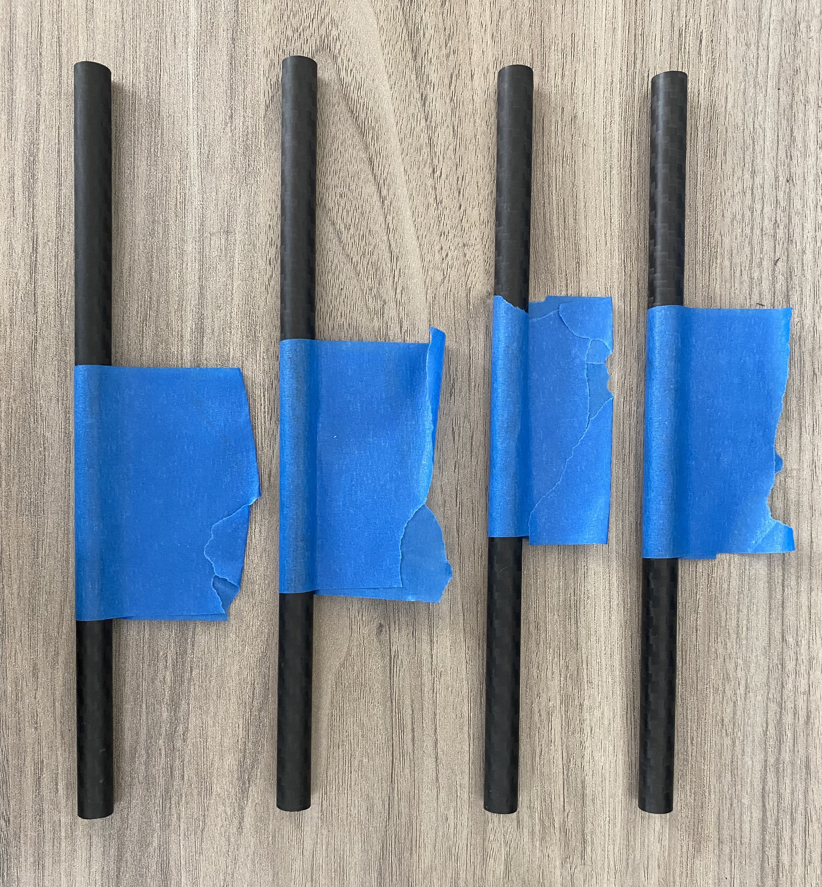
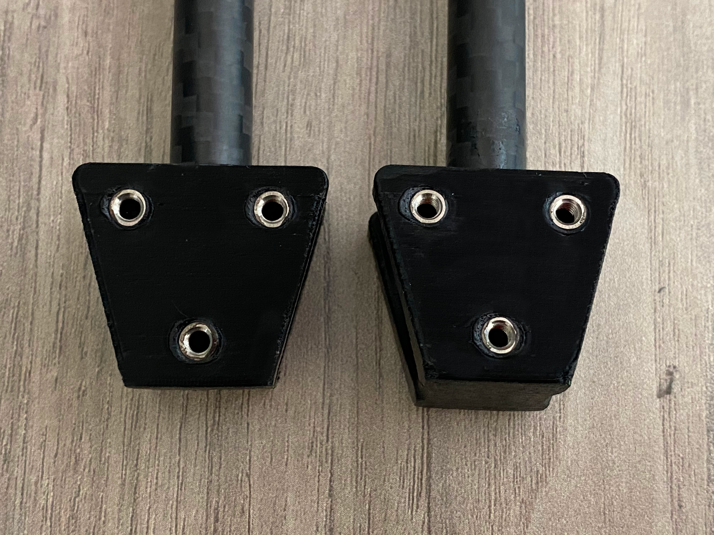
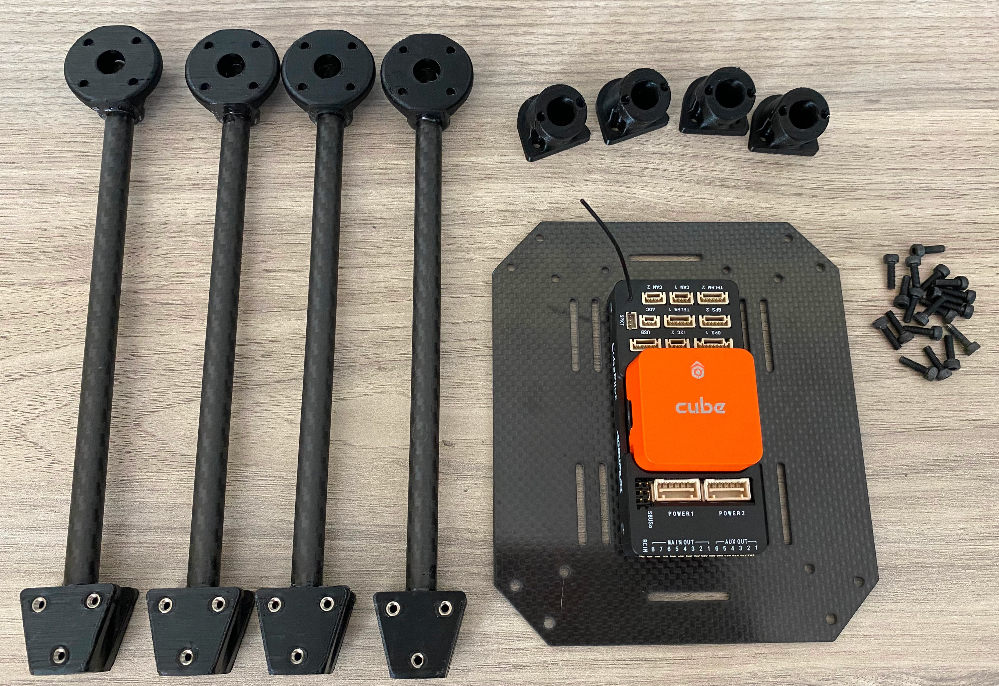
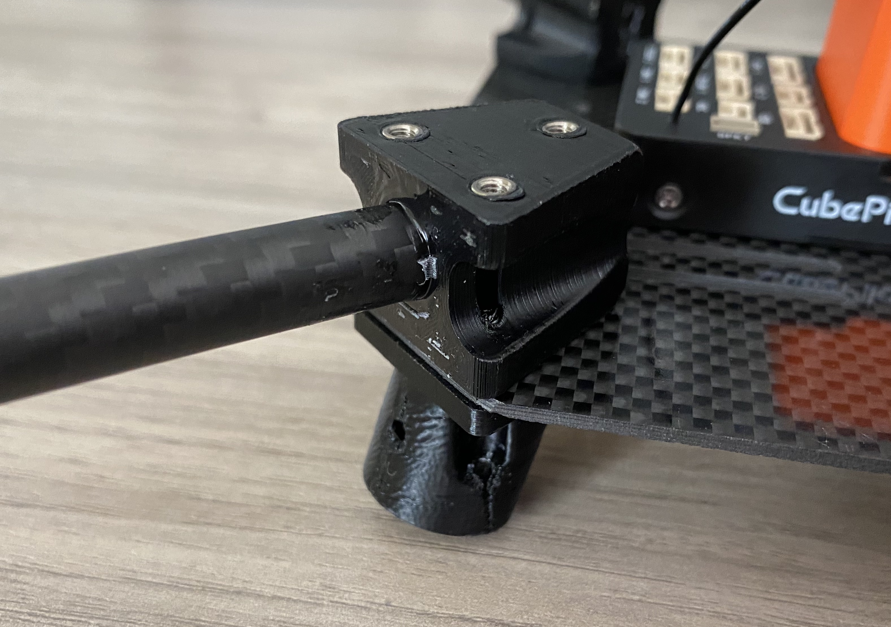

Project Overview
TODO
UAV Assembly
Let's build a drone!
Materials Needed:
- Carbon Fiber Base Plate
- Water jet or order
- PCB
- Solder Components
- Verify
- Arms
- Print Motor Mounts
- Print Arm Nodes
- Print Mold - 1% scale
- Cut Tubes to length
- Insert Threaded Inserts
- Glue together
- Landing Legs
- Print Leg Mounts
- Print Leg Joint
- Cut tubes to length
- Drill holes in tubes
- Bolt Together
Creating the Carbon Fiber Arms
Before gluing, clear your work table. Use either a silicon mat or lay paper towels across your work table as you don't want to get JB weld everywhere. You also want a pair of gloves, a cup to mix the JB weld in and a stirring stick.
After that grab your carbon rods, arm mounts, motor mounts and molds. Below is a picture of all those components.
First wrap each of your carbon rods with painters tape in the middle leaving a section that can be used to pull the arm out of the mold once cured. Below shows rods taped:
Next you'll glue the arms together. Note: the JB weld only has 10 minutes of good working time so if you're doing this by yourself only do two arms at a time to give yourself plenty of time. Now open the JB weld, push out about two quarter size blobs into your container. Stir the two parts of the JB thoroughly; after mixing use your stir stick to coat the inside of the motor mount with JB. Then coat the inside & outside of the carbon rod. After both the mount and rod have a thin coating, slowly insert the rod while spinning it. Make sure there is always a thin ring of JB weld around the rod. If there isn't, you need more JB. Use a paper towel to remove any excess JB. Repeat the process for the arm mount. Note: the motor mount takes more glue than the arm mount. After both sides have been glued rotate the pieces so the tape aligns with the top of the motor & arm mount. Slowly insert the glued assembly into the mold. Push firmly to ensure the mounts lay flat within the mold. Repeat the process for the other 3 arms.
After waiting 24 hours for a full cure before removing the arms from the molds. To remove the arms use the tape to pull the arms out or insert two rods into the holes in the bottom of the mold while pressing against the mold to pop the arm out of the mold.
Heat Set Inserts
Before getting started, go over the following resources on how to use thermoplastic heat set inserts.
As shown in the video a jig for the iron helps create a better product. You can follow the instructions to make one from Adafruit.
Using a soldering iron melt the thermoplastic inserts into the arm mounts. If you aren't using the insert press ensure that the inserts are straight; a good way of checking is to use a screw to spot the normality of the bolt. The plastic will still be warm enough for fine adjustments. Once all the inserts have been added the arms are now complete and should look like the following:
Assemble Lower Frame
First mount the Orange Cube to the carbon fiber base plate with the provided screws. The arrow on the cube should face towards the two additional holes in the base plate. Next you'll also need the glued arms, the landing leg mounts and the M3 bolts. Below is an image of all those items:
Next is to mount the arms and leg mounts to the carbon fiber plate. Each corner requires 3 bolts, repeat.
Assemble Landing Legs TODO
TODO
Cutting Motor Leads & Mounting Motors TODO
TODO
PCB & Electronics
Required Materials
- 1 - Custom PCB Drone Frame
- 1 - 0.001 Ohm Current Sense Resistor(SMD)
- 1 - 0402 2 kOhm SMD Resistor(SMD)
- 1 - 0402 8 kOhm SMD Resistor(SMD)
- 1 - 0805 47 kOhm SMD Resistor(SMD)
- 1 - IN9 Voltage to Current Amplifier(SMD)
- 1 - JST-GH Connector
- 4 - KDEDirect KDEXF-UAS35 ESC
- 1 - KDEDirect KDEXF-UBEC22 Battery Eliminator Circuit
- 1 - EC5 Male Battery Connector
- Solder Iron, Solder Paste, Solder Wire, Other Soldering Accessories as Needed
- Tweezers
Final Assembly
Required Materials
- Cube Orange
- 4 - Motors
- 4 - Completed Arm Assemblies
- Telemetry Radio
- Receiver
- Completed PCB with soldered ESCs
- Velcro
- Zip Ties
- Special Wire
- GPS Module
- Legs
TODO
Conclusion
Now that you have a working drone continue to the First Flight page for information on getting it in the air.
First Flight TODO
TODO: Add instructions for initial calibration, takeoff procedures for first flight
Bill of Materials TODO
TODO
Contact Information
TODO
File Download
TODO